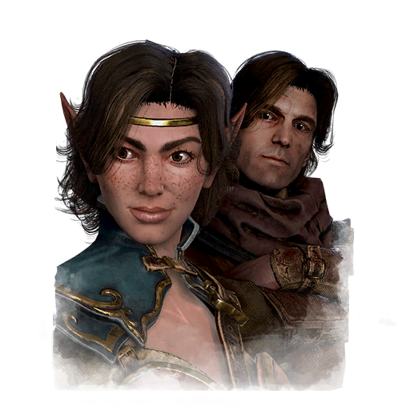
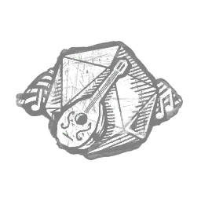
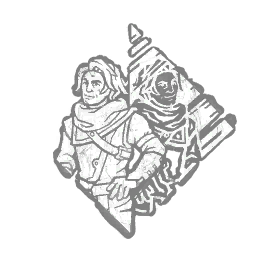
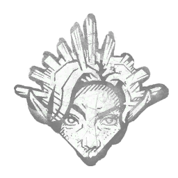

艾斯特里·雅扎尔 & 贝尔玛·乌拉斯 Aestri Yazar & Baermar Uraz
- 性别
- Woman (Aestri)Man (Baermar)
- 出身
- Oerth (D&D World)
- 演员
- Aestri: Jesse VilinskyBaermar: Robbie Daymond(both Blindlight)
背景故事
艾斯特莉与贝尔玛尔抵达自由城灰岩，想要用歌谣与故事同当地人交换。然而两位吟游诗人在此行的所见所闻，却将他们引向了最后的冒险。
据本地人与过客 alike 所言，一种前所未有的全新魔法正在这片土地上蔓延。邪恶的力量从土地的每个角落消失，未留丝毫恶意痕迹。整个灰岩城一片欢腾，艾斯特莉与贝尔玛尔却另有所感。吟游诗人毕生的意义，在于礼赞战胜逆境的凯歌。一个没有邪恶的世界，便是一个再无新歌可唱的世界。艾斯特莉知道自己该做什么。她在城中的酒馆与暗巷里四处打探，寻找愿意协助她与贝尔玛尔查明这股奇异魔法源头的冒险者。很多人一口回绝——她为何会希望邪恶重回这片土地？但艾斯特莉凭借机智与魅力，说动了足够多的城中居民，与她一同去恢复善与恶之间的平衡。
这支临时拼凑起的冒险小队一道穿越沼泽、钻行山腹。他们被一些城镇驱逐出来，因为那些人坚称这支队伍暗中与已被铲除的邪恶势力沆瀣一气。而每隔一段时间，总会有人好心送来食物、容身之所，以及最重要的——情报。贝尔玛尔急切地把听到的每一条线索与传闻都记录下来，并断定这股奇异魔法的源头必定就在基奥兰王国附近，那里的人们说……
专属技能

吟游诗篇
Bardic Inspiration

镜像幻象
Mirrored Illusion

静止视野
Still Sight
通用技能 任意逃生者均可使用
寻宝专家
Artefact Hunter
执念之缚
Bound by Obsession
黑暗感知
Dark Sense
坚持到底
Down to the Last
似曾相识
Déjà Vu
希望
Hope
同族
Kindred
最后站立
Last Standing
轻装上阵
Lightweight
不抛弃任何人
No One Left Behind
过度自信
Overconfidence
掠夺者直觉
Plunderer's Instinct
预兆
Premonition
韧性
Resilience
滑溜之躯
Slippery Meat
小猎手
Small Game
背脊发凉
Spine Chill
这不是真的
This Is Not Happening
硬跑者
Tough Runner
我们能行
We'll Make It
求生意志
Will to Live
附加品
- 暂无数据。